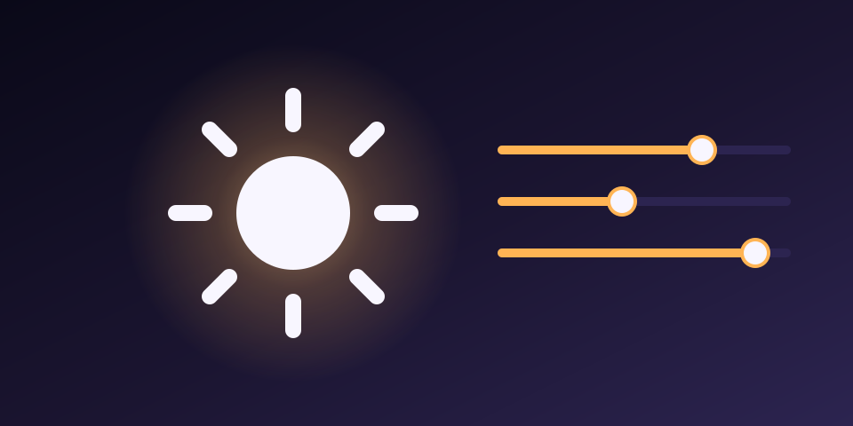
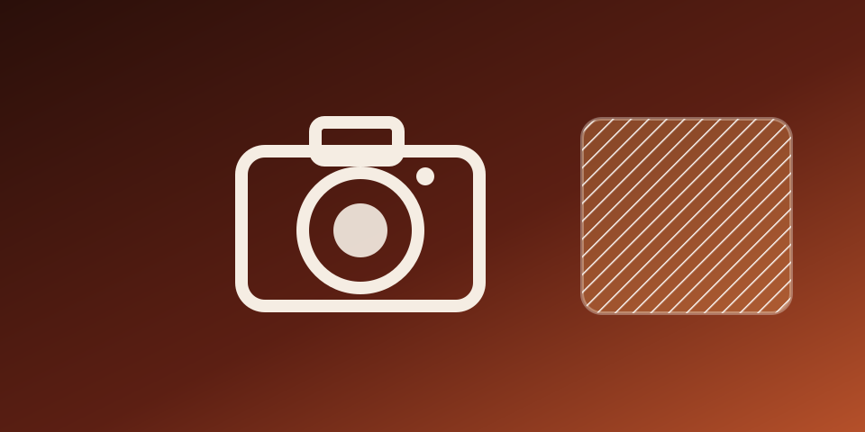
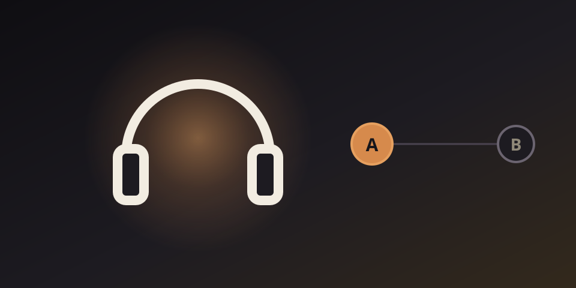

Lumina
タスクバーからワンクリックで、複数モニターの明るさを調整
タスクバーのアイコンから、複数モニターの明るさをモダンなスライダーパネルでワンクリック調整。
A playground for code and ideas.

タスクバーのアイコンから、複数モニターの明るさをモダンなスライダーパネルでワンクリック調整。

色弱の方向けに、カメラをかざすとまだ生っぽい部分に斜線ハッチングを重ねて可視化するiOSアプリ。

ショートカットキーひとつでWindowsの音声出力を瞬時に切り替える軽量ツール。